MARKSMANWAY OF ETERNITYMIDDLE LINEPHYSICAL DAMAGEDODGEKNOCKBACKRELICS
HERO OVERVIEW
Dante — Turning Dodge into Pressure
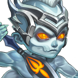
Dante is a midline Marksman from the Way of Eternity. His identity goes far beyond traditional Physical Damage.
Dodge can feed his counterattacks, spectral spears repeatedly push enemies backward, and every successful spear from his relevant abilities can reduce the target's Main Stat.
Through teamwide Dodge support, reactive attacks and repeated positioning disruption, Dante can create considerable battlefield pressure while helping his allies survive incoming physical attacks.
ETERNITYHero faction
MARKSMANPrimary class
AGILITYMain attribute
MIDDLEBattlefield position
Core identity: Dante converts defensive Dodge opportunities into offensive pressure, enemy displacement and Main Stat reduction. His value cannot be measured by damage alone.
DANTE'S HERO KIT
Dante — All Four Skills Explained
Dante's abilities are closely connected. His spectral spears provide offensive pressure, while teamwide Dodge can create additional opportunities for his reactive attacks.
Instrument of Fate
Dante throws four spectral spears at multiple enemies. Each spear deals Physical Damage and pushes its target backward.
The Skill scales from Dante's Physical Attack. However, damage represents only part of its value.
Repeated knockback changes enemy positioning and can compress multiple heroes closer together, creating opportunities for allied abilities that benefit from grouped opponents.
Four spectral spears · Physical Damage · Knockback
Strategic advantage: Instrument of Fate allows Dante to disrupt the opposing formation while dealing damage and creating opportunities for the rest of his team.
Foresight
Dante increases the Dodge of all allies for seven seconds. The ability scales from his Physical Attack.
Against Physical Damage, successful Dodges prevent incoming attacks from connecting. For Dante, however, Dodge also has a direct connection to his offensive mechanics.
By increasing the Dodge of the entire team, Foresight can create additional opportunities for Retribution to activate.
Teamwide Dodge increase · Duration: 7 seconds
Strategic advantage: Physical Attack investment improves more than Dante's offensive output. It also supports one of his most important teamwide defensive abilities.
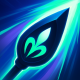
Retribution
Whenever Dante or one of his allies successfully Dodges damage, Dante can conjure a spectral spear and launch it at the nearest enemy.
The spear deals Physical Damage and pushes the target backward.
This mechanic creates offensive opportunities independently of Dante's ultimate. Successful Dodges can contribute to additional spear pressure without requiring him to wait for a full Energy bar.
The ability scales from Dante's Physical Attack, creating another important reason to prioritize his offensive development.
Main Stat reduction · Base duration: 7 seconds
Strategic advantage: Dante's spears do more than deal damage and reposition enemies. They also weaken the attributes supporting the opponent's overall performance.
THE DANTE MACHINE
Dodge Feeds Offense
Foresight creates additional Dodge opportunities. Successful Dodges can activate Retribution, which produces more spectral spears, damage, knockback and Main Stat reduction.
FORESIGHT→DODGE→RETRIBUTION→SPECTRAL SPEARS→KNOCKBACK→MAIN STAT REDUCTION
DANTE RELIC SYSTEM
Relics — Four Upgrades Explained
Dante's Relics expand his existing spectral spear mechanics, displacement, Armor Penetration, Main Stat reduction and positioning-dependent attributes.
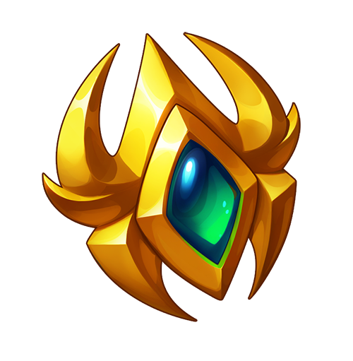
Dante RelicPiercing ThrowInstrument of Fate
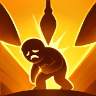
Shackles of WeaknessShifting Focus
RELIC UPGRADE 1
Piercing Throw
This Relic introduces a recurring spectral spear that strikes the closest opponent at nine-second intervals, dealing damage and displacing its target.
It creates another opportunity for Dante to pressure the opposing frontline outside the activation of his ultimate.
Recurring spectral spear · 9-second interval
Strategic advantage: Additional spear pressure gives Dante another way to influence enemy positioning throughout the battle.
RELIC UPGRADE 2
Instrument of Fate — Armor Penetration
Knocking opponents backward grants Dante temporary Armor Penetration for six seconds.
This strengthens the connection between his displacement mechanics and his Physical Damage output.
Knockback → Armor Penetration · 6 seconds
Strategic advantage: Dante's repeated displacement can help him overcome opposing physical defenses and increase the effectiveness of his attacks.
RELIC UPGRADE 3
Shackles of Weakness — Extended Duration
This upgrade extends the duration of Dante's Main Stat reduction to 16 seconds.
The longer duration increases the potential uptime of the negative effect created by his spectral spears.
Main Stat reduction · Extended duration: 16 seconds
Strategic advantage: Longer debuff duration reinforces Dante's ability to weaken opponents while continuing to control their positioning.
RELIC UPGRADE 4
Shifting Focus
Shifting Focus provides Dante with different attribute benefits depending on enemy positioning.
When enemies are nearby, Dante receives additional Dodge. When no enemies are close, he gains Physical Attack instead.
Nearby enemies: Dodge · No nearby enemies: Physical Attack
Strategic advantage: This Relic adapts Dante's development during battle, supporting defense under close-range pressure and offense when he has more space.
Testing context: The original GOA Dante guide did not include dedicated Relic battle testing. These upgrades are presented according to their described mechanics, not as confirmed results from our own Relic tests.
DEVELOPMENT PRIORITY
Dante — Best Skin Priority
Physical Attack is our primary Skin investment because it supports Dante's offensive abilities and the scaling of important parts of his hero kit.
Health and Dodge follow to improve his survivability, while Armor Penetration, Agility and Magic Defense contribute to further development.
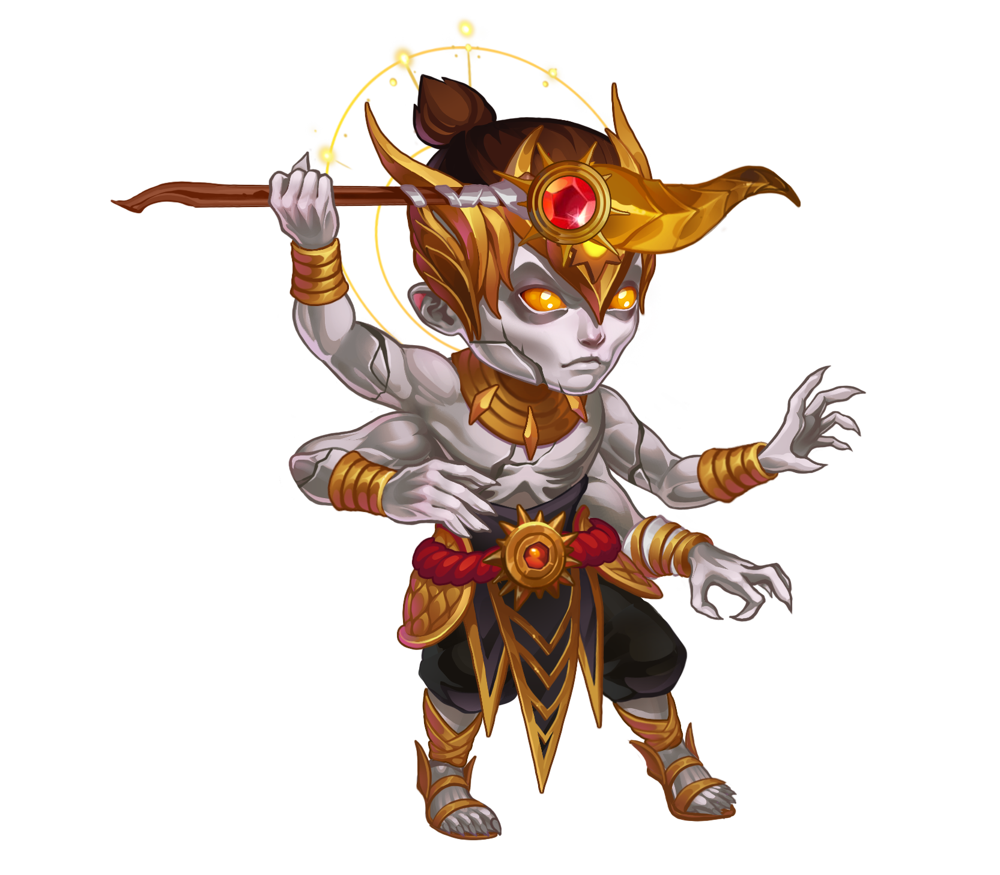
1
Solar Skin
Physical Attack. Our first investment priority. Physical Attack strengthens Dante's damage and the scaling of his abilities, making it fundamental to his development.
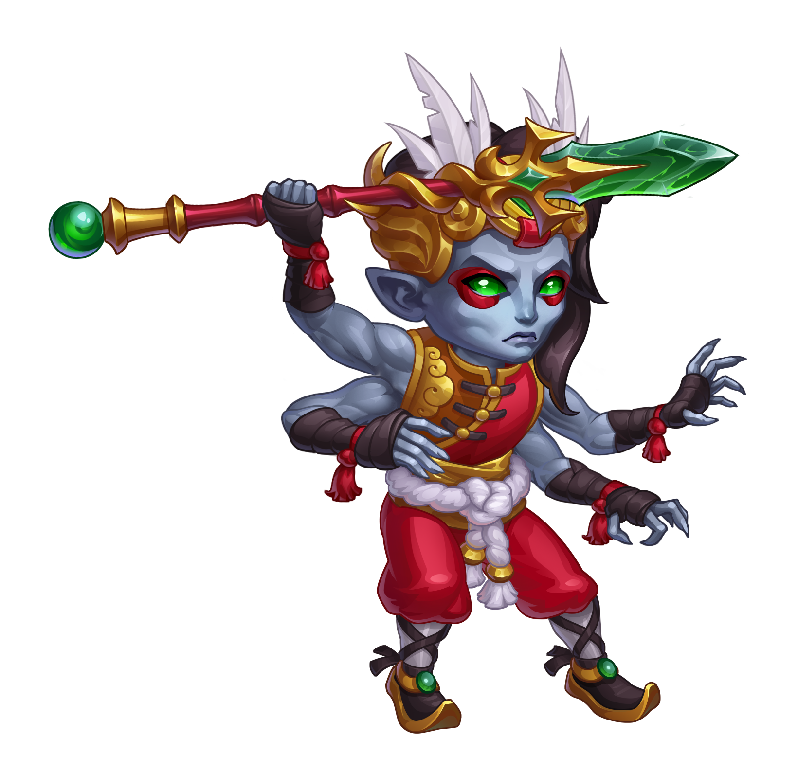
2
Lunar Skin
Physical Attack. Further reinforces Dante's damage output and the Physical Attack scaling of his hero kit.
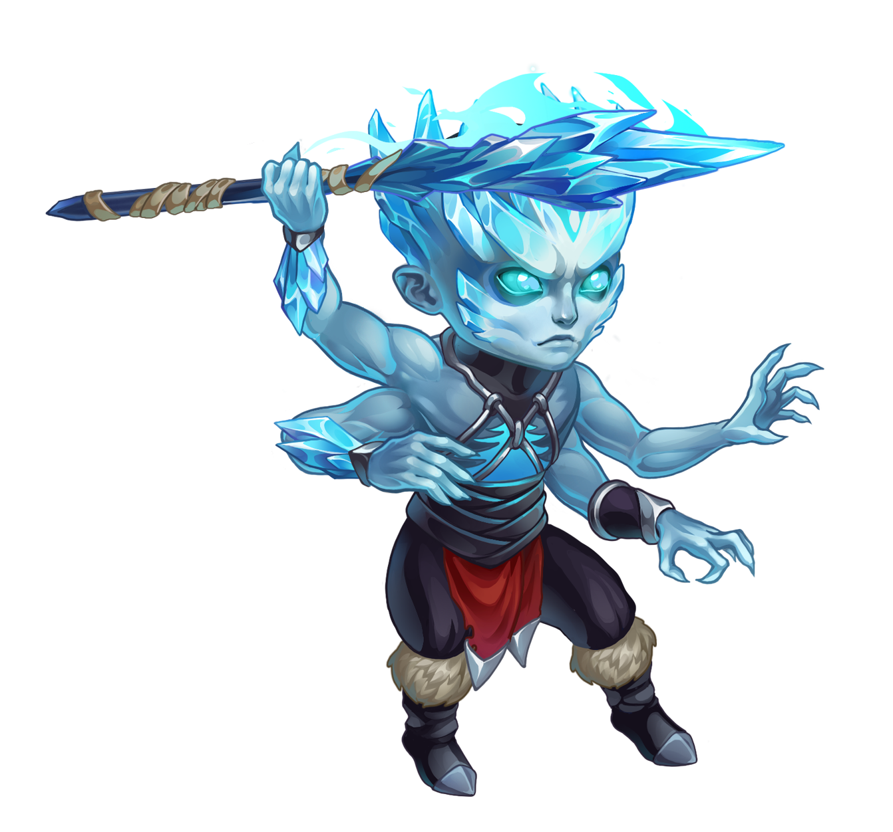
3
Winter Skin
Health. Helps Dante survive incoming pressure and remain active long enough to continue launching spectral spears and supporting his allies.
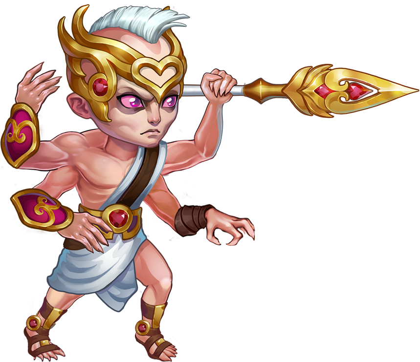
4
Romantic Skin
Dodge. Supports Dante's survival against Physical Damage while contributing to the defensive and offensive interaction behind Retribution.
5
Oblivion & Oblivion+ Skin
Armor Penetration. Helps Dante overcome enemy Armor and improves the effectiveness of his Physical Damage against more durable opponents.
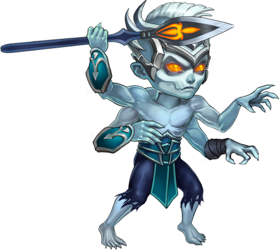
6
Default Skin
Agility. Develops Dante's primary attribute and contributes to his overall offensive and defensive statistics.
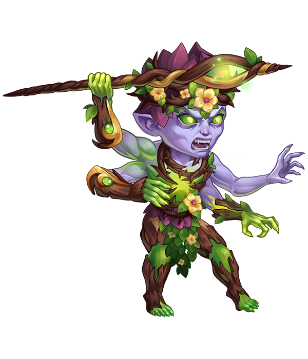
7
Spring Skin
Magic Defense. Improves Dante's resistance to magical attacks, providing protection against a damage type that ordinary Dodge does not normally avoid.
GOA development priority: Physical Attack → Physical Attack → Health → Dodge → Armor Penetration → Agility → Magic Defense.
Why Physical Attack comes first: It does more than strengthen Dante's regular attacks. His abilities also scale from this attribute, making both Physical Attack Skins particularly valuable.
STAT INVESTMENT
Glyphs — Recommended Upgrade Order
1
Health
Our first Glyph priority. Dante needs enough Health to survive incoming pressure, especially during mid-game development.
2
Dodge
Improves defensive performance against Physical Damage and contributes to Dante's Retribution mechanic.
3
Physical Attack
Strengthens Dante's offensive output and improves the scaling of his important abilities.
4
Agility
Develops Dante's Main Stat and supports his overall hero attributes.
5
Armor
Provides an additional defensive layer against Physical Damage when incoming attacks are not successfully Dodged.
Initial recommendation: Bring all five Glyphs to Level 40. Beyond that point, additional investment should depend on your development objectives and Skill Class progression.
ARTIFACT DEVELOPMENT
Artifacts — Best Investment Priority
Dante's Artifacts combine personal survivability, Main Stat development and teamwide Dodge support.
1. Artifact Book
Dodge & Health.
Our first priority. Health improves Dante's general survivability, while Dodge contributes to both his defense and the mechanics that can activate Retribution.
This combination provides valuable foundational development for a Dodge-oriented Marksman.
2. Artifact Ring
Agility.
Develops Dante's primary attribute, contributing to his overall offensive and defensive statistics.
3. Artifact Weapon — Spear of Fate
Teamwide Dodge.
Whenever Dante activates Instrument of Fate, his Artifact Weapon provides a Dodge bonus to his allies through the Artifact activation mechanic.
This supports the wider Dodge strategy of the composition and can help create additional Retribution opportunities.
Recommended order: Book → Ring → Weapon.
CORE ATTRIBUTES
Gift of the Elements
Recommended Investment — Maximum
Max Dante's Gift of the Elements as resources allow.
Without enough fundamental development, Dante can become a glass cannon, capable of dealing damage but unable to survive long enough to maintain his offensive and defensive mechanics.
The goal is to provide the Health, Physical Attack and overall development necessary for him to remain active while continuing to damage and disrupt the opposing formation.
ADVANCED HERO DEVELOPMENT
Dante — Talisman Comparison
Dante has two Talisman options offering different approaches to his offensive development and Dodge-oriented mechanics.
First Talisman
Main attribute: Agility.
Additional attribute: Critical Hit Chance.
This option develops Dante's Main Stat while introducing additional offensive potential through Critical Hits.
It offers a different approach to Dante's damage development compared with his more directly Dodge-oriented Talisman.
Original availability: Eternal Frontier Shop
700,000 Frontier Coins
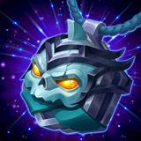
Second Talisman
Main attribute: Physical Attack.
Additional attribute: Dodge.
A natural combination for Dante. Physical Attack directly strengthens his abilities, while Dodge contributes to survival and can feed Retribution.
This Talisman reinforces the connection between Dante's defensive mechanics and his offensive battlefield pressure.
Availability: Special Events
GOA recommendation: Both Talismans offer valuable attributes. Physical Attack and Dodge are particularly closely connected to Dante's core hero mechanics.
BATTLEFIELD INTERACTIONS
Dante — Important Hero Synergies
Dante's value increases when his teammates can benefit from enemy displacement, grouped opponents or additional Dodge opportunities.
Drayne — Enemy Positioning
Dante's repeated knockback can compress the opposing formation, creating opportunities for Drayne to attack multiple targets more effectively.
The connection between these two heroes is not simply about damage. It is also about how Dante helps influence the positions of enemy heroes throughout the battle.
Key advantage: Enemy compression and opportunities to pressure multiple targets.
Iris — Eternity Pressure
Iris can capitalize on the battlefield Dante helps create while he continues manipulating enemy positioning with repeated spectral spear pressure.
Dante contributes displacement and Main Stat reduction, while Iris provides her own offensive mechanics.
Key advantage: Combining battlefield disruption with additional offensive pressure.
Octavia — Advanced Dodge Synergy
Octavia can take the Dodge concept further by extending Dodge into protection against Magic Damage through her relevant mechanics.
This expands the possibilities of a Dodge-oriented composition beyond its traditional interaction with Physical Damage.
For Dante, additional successful Dodge opportunities can also support the offensive interaction behind Retribution.
Key advantage: A strong connection between defensive Dodge mechanics and reactive offensive pressure.
Team-building philosophy: Dante is particularly interesting when the composition can benefit from his displacement and Dodge support. Build around the opponent and the mechanics of your available heroes rather than relying on one universal formation.
BREAKING THE DODGE MACHINE
How to Counter Dante
Dante can create considerable pressure when his Dodge mechanics are allowed to operate continuously. However, several heroes and combat mechanics can interfere with this cycle.
DEBUFF INTERACTION
Iris
Shackles of Weakness places a negative effect on enemy heroes, making Iris particularly relevant against Dante and compositions built around him.
Her interactions with negative effects can make Dante's repeated application of Main Stat reduction an important consideration when selecting an opposing composition.
PURE DAMAGE
Heidi
Pure Damage creates significant problems for Dodge-oriented defenses because it cannot be avoided through ordinary Dodge.
Heidi attacks the defensive philosophy behind Dante from a different direction, reducing the value of relying exclusively on Dodge for survival.
PURE DAMAGE
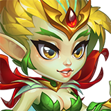
Maya
Maya's Pure Damage provides another option against compositions that depend heavily on Dodge.
Her damage mechanics can contribute to sustained pressure without relying exclusively on physical attacks that Dante's team may avoid.
PURE DAMAGE
Kendle
Kendle provides another approach against Dodge-oriented defenses through his Pure Damage capabilities.
These interactions can help attack Dante's survivability without depending entirely on damage that can be Dodged.
CONTROL
Polaris
Control can prevent Dante from operating normally and interrupt his Dodge-driven offensive mechanics before they build momentum.
Polaris represents an important example of how battlefield control can interfere with a hero whose value depends on repeatedly activating connected abilities.
CONTROL MECHANIC
Chronostasis
Mechanics such as Chronostasis can Stun or stop Dante, preventing him from simply continuing his normal battlefield cycle while under control.
Interrupting his ability to act can help reduce the pressure created by repeated spectral spear attacks.
Counter strategy: Pure Damage and effective control are particularly important considerations against Dante. The effectiveness of each counter still depends on the complete enemy composition, hero development and the timing of battlefield interactions.
FINAL VERDICT
Dante — More Than a Marksman
Looking only at Dante's damage misses a major part of his identity.
Instrument of Fate attacks and pushes enemies. Foresight increases Dodge. Retribution converts successful Dodges into additional spectral spear pressure, while Shackles of Weakness reduces the target's Main Stat.
These mechanics create an interconnected hero kit that combines offensive development, defensive support and battlefield disruption.
What Makes Dante Valuable?
Physical Damage: Multiple spectral spear attacks and Physical Attack scaling.
Enemy displacement: Repeated knockback can change the opposing formation.
Teamwide Dodge: Provides defensive utility to the entire composition.
Reactive counterattacks: Successful Dodges can generate additional offensive opportunities.
Main Stat reduction: Weakens enemies through his spectral spear interactions.
Relic development: Expands his existing mechanics through recurring spears, Armor Penetration, longer debuff duration and adaptive attributes.
With heroes such as Drayne, Iris and Octavia around him, Dante's mechanics can become even more interesting as enemy positioning, Dodge and battlefield pressure begin interacting with the rest of the composition.
Gods of Alliance conclusion: Dante is not simply a traditional Physical Damage dealer. He is a Marksman whose defensive and offensive mechanics work together to influence the battlefield. Understanding these connections is essential to getting the most value from his development.
GODS OF ALLIANCE · VIDEO GUIDE
Watch the Complete Dante Guide
Watch our full Dante guide to discover his Skills, development priorities, Dodge mechanics, synergies, counters and important battlefield interactions.
EXPLORE THE DOMINION
Discover More Hero Guides
Explore our complete collection of Hero Wars Alliance guides, development recommendations, strategies and hero interactions.